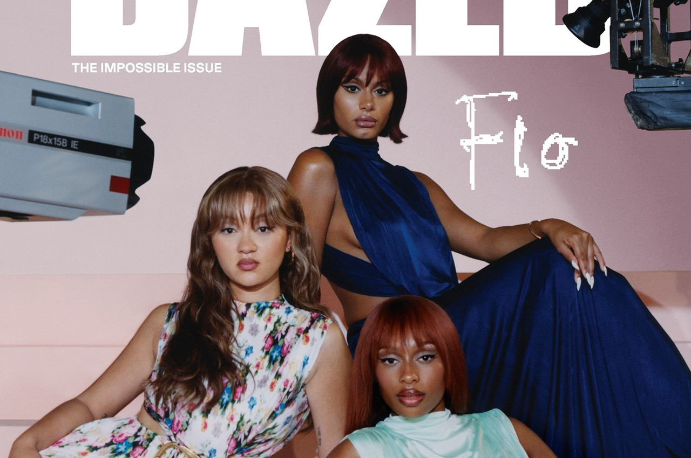
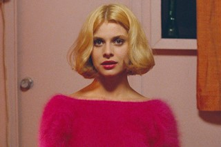

music
Find your creative community.
Get the Dazed Club app now

FLO: 'We're the best thing since sliced bread’
The UK girl group have emerged from a testing few years with their unbreakable bond intact – and a debut album, Access All Areas, that delivers on the promise of their hype
Latest
music
Sade sings heartfelt ode to her trans son on upcoming benefit album
life & culture
Hvaldimir the 'Russian spy whale'turns up dead in suspicious circumstances
fashion
Life is ruff for Sandy Liang's SS25 spy girls
music
English Teacher's Mercury Prize win is a victory for the North
Get the best of dazed every weekday
Explore all of our newsletters in one place
Bella Hadid ditched the rodeo for a Saint Laurent runway return
The supermodel slipped out of her chaps and into a power suit to walk Anthony Vaccarello’s SS25 show – her first Paris appearance in two years
Moschino SS25 pays tribute to Judy Blame
For SS25, Adrian Appiolaza presented his third collection for Moschino at Milan Fashion Week.
Chappell Roan: The best street style from the singer’s London show
The streets of Brixton were painted pink last weekend as attendees of Chappell Roan’s performance at the O2 Brixton dressed to the theme of hit single ‘Pink Pony Club’, replete with fluffy cowboy hats and neon corsets
The magazine
The miseducation of Mk.gee
Ayra Starr: ‘I wanted to be an African superstar’
Willow Smith is out of the woods
Willow Smith is out of the woods
Willow Smith spent years recovering from her first, tumultuous brush with fame. Now, having released her most spiritually guided album to date, she's finding new ways to turn anguish into art - and get 'comfortable' being uncomfortable'
Trending
life & culture
‘No Ordinary Love’: R. O. Kwon on starting a love story with open questions
beauty
We are about to enter the ‘Undetectable Era’ of beauty
The miseducation of Mk.gee
A musical prodigy who’s got the whole world guessing at his secrets, Mk.gee’s thrilling and mysterious adventures in pop have seen him hailed as a new kind of guitar hero. He explains his burning desire to be the ‘best at something indescribable’
Features
film & tv
Elizabeth Olsen: 'I love making people uncomfortable with art'
sep 12, 2024 Nick Chen
music
On God Colony's new EP, 80s raves meet modern club culture
sep 13, 2024 Solomon Pace-Mccarrick

8 of the best new books to read this autumn
From Sally Rooney’s new novel to Caleb Femi’s poetic ode to partying, here’s a list of new and upcoming books the Dazed team has been reading this month
